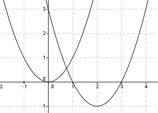

Aufgabe 104 Wie lautet die Funktionsgleichung einer Normalparabel, die um 2 Einheiten nach rechts und um eine Einheit nach unten verschoben wird?  Allgemeine Scheitelpunktform einer Normalparabel: y = a(x - xS)2 + yS Alter Scheitelpunkt bei S(0|0), neuer bei S(2|-1), das bedeutet xS = 2 , yS = -1. In die Scheitelpunktform eingesetzt: y = (x - 2)2 - 1 = gesuchte Funktionsgleichung.